Аннотации типов и документация кода · МДК.01.01 · разработка программных модулей
Глава 4.13
conf.py, autodoc
и napoleon
В этой главе на сайт из главы 4.12 выводятся докстринги модуля app/services/orders.py. Путь идёт через три ошибки сборки, и каждую закрывает одна правка в conf.py: подключение autodoc, путь к проекту, подключение napoleon. Затем разобрано, как Sphinx сообщает об ошибке разметки в докстринге и как превратить такое сообщение в ошибку сборки. Каждый шаг показан кадром VS Code или страницы сайта.
- Категория
- Пошаговая работа
- Время
- Около 60 минут
- Расширения
autodoc,napoleon,viewcode- Результат
- Страница модуля с разделами Google на сайте
После главы 4.12 сайт собирается, но на нём одна главная страница с текстом из index.rst: модули проекта Sphinx не читает. В этой главе на сайт выводится первый модуль — app/services/orders.py, — а conf.py настраивается так, чтобы разделы Google стали полями «Параметры», «Результат», «Исключение».

§1План главы
Чтобы на сайте появились описания функций, Sphinx должен импортировать модуль проекта, прочитать докстринги и разобрать в них разделы Google. Каждое из этих действий включается отдельно, и пока оно не включено, сборка сообщает об ошибке. Поэтому глава идёт так: правка, сборка, сообщение, следующая правка.
Что печатает сборка после каждой правки
Все правки, кроме первой, делаются в docs/source/conf.py. Этот файл — обычная программа на Python: Sphinx выполняет его перед каждой сборкой и берёт из него значения переменных.
Сборка в этой главе запускается с ключом -q: .venv/bin/sphinx-build -M html docs/source docs/build -q.venv\Scripts\sphinx-build -M html docs/source docs/build -q. Ключ убирает строки об этапах и оставляет только предупреждения и ошибки. Если сборка прошла чисто, вывод пуст.
§2Страница для модуля
Описания функций выводятся на страницу директивой automodule. Директива — команда сборщику внутри текста страницы: строка .. имя:: аргумент и под ней с отступом параметры. Оглавление toctree из главы 4.12 — тоже директива. Три шага: файл страницы, оглавление, сборка.
Создайте docs/source/orders.rst
Правая кнопка на папке docs/source в проводнике → New File → orders.rst. Наберите четыре строки и сохраните.
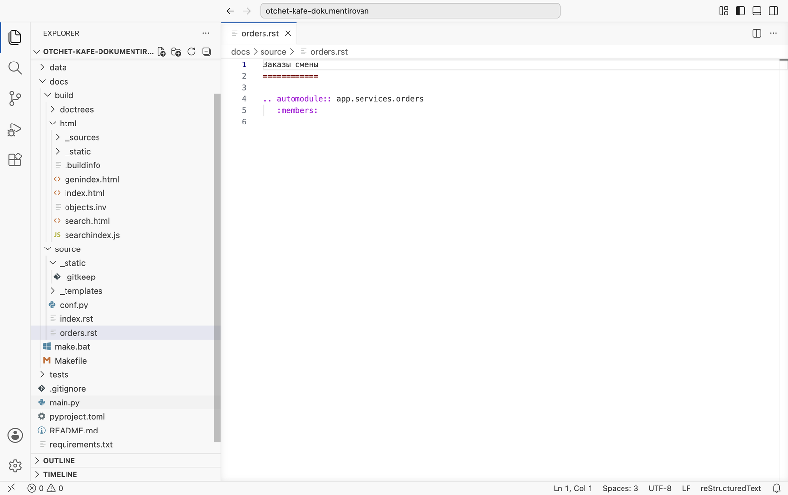
1–2 — заголовок страницы с чертой. Строка 4 — директива automodule, её аргумент app.services.orders записан так же, как в import. Строка 5 — параметр :members: с отступом в три пробела: вывести, кроме докстринга модуля, все его функции и классы.Добавьте страницу в оглавление
В index.rst под параметрами toctree оставьте пустую строку и впишите orders — имя файла без .rst, с тем же отступом в три пробела.
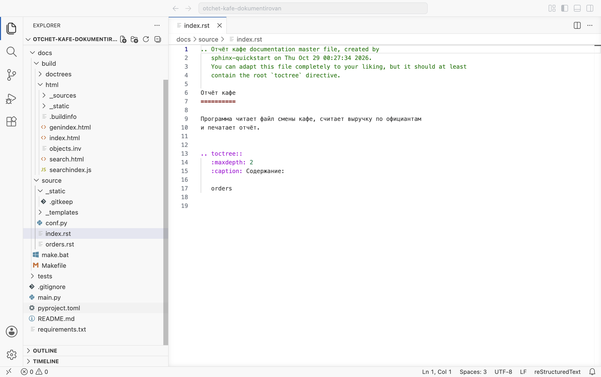
17 — orders. Без неё страница соберётся, но перейти на неё с главной будет нельзя.Соберите и прочитайте ошибку
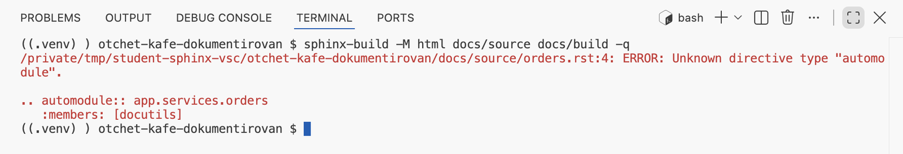
orders.rst:4: ERROR: Unknown directive type "automodule" — в строке 4 директива, которую Sphinx не знает. Ниже повторён фрагмент файла, в скобках — источник docutils.Директиву automodule добавляет расширение autodoc, а список extensions в conf.py пока пуст. Сборка при этом не остановилась: страница «Заказы смены» создана с одним заголовком. Так Sphinx поступает с большинством ошибок в страницах — сообщает и продолжает.
§3Расширение autodoc
Расширение Sphinx — модуль Python, который добавляет директивы и настройки. Расширения, входящие в Sphinx, называются sphinx.ext.…; подключают их строкой в списке extensions. sphinx.ext.autodoc импортирует модуль проекта, как инструкция import, и читает докстринги из атрибутов __doc__ — тех, что разобраны в главе 4.7. Два шага.
Подключите autodoc в conf.py
Замените строку extensions = [] списком из одного элемента и сохраните файл.
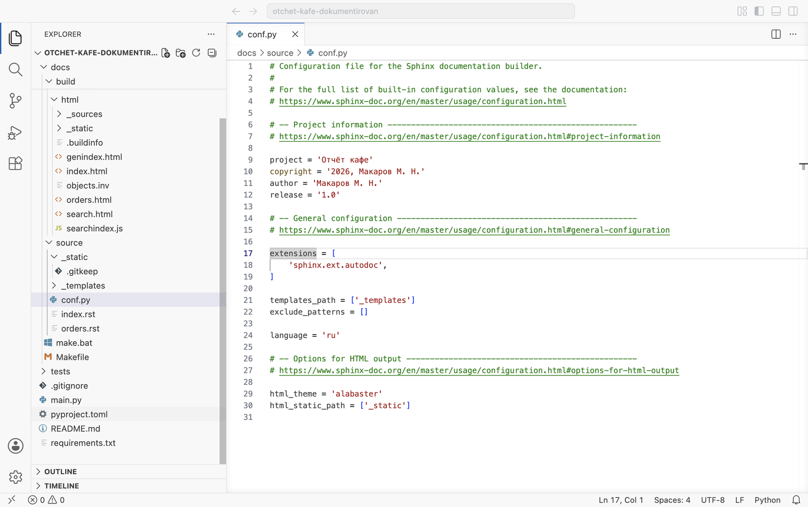
Соберите и прочитайте трассировку
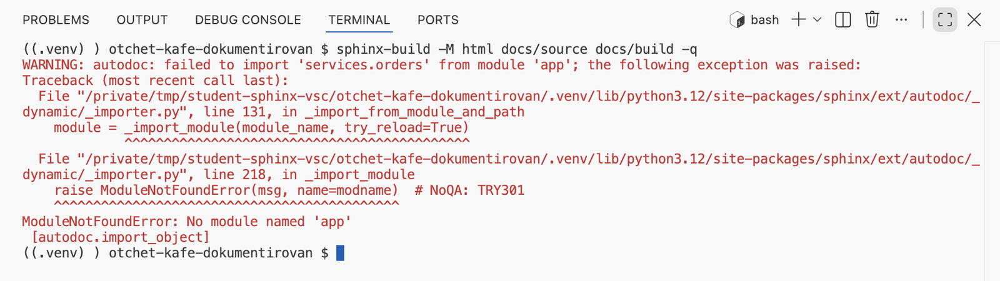
WARNING: autodoc: failed to import 'services.orders' from module 'app': autodoc не смог импортировать модуль. Ниже — трассировка Python. Её читают с конца: последняя строка ModuleNotFoundError: No module named 'app' — пакет app не найден. Строки File … относятся к коду самого Sphinx, ошибку в них искать не нужно.Директива теперь известна, но импорт не прошёл. Почему пакет, лежащий рядом с docs, не найден, — следующий параграф.
§4Путь к проекту
Python ищет импортируемые модули в папках из списка sys.path, по порядку. Когда в терминале выполняют python main.py, первой в этот список попадает папка запускаемого файла — корень проекта, и import app проходит. sphinx-build — программа из папки .venv, корня проекта в её списке нет.
Ассоциация: список складов у курьера
Курьер объезжает склады из своего списка по порядку и забирает посылку на первом, где она есть. Склада нет в списке — курьер вернётся ни с чем, даже если посылка лежит в соседнем доме.
sys.path — список папок, import app проверяет их по порядку. Корня проекта в списке нет, поэтому app не найден. Решение — добавить корень проекта в начало списка.
Три шага: строка в conf.py, сборка, страница в браузере.
Добавьте корень проекта в sys.path
В начало conf.py, перед строкой # -- Project information, вставьте импорт и одну строку кода с комментарием. Сохраните.
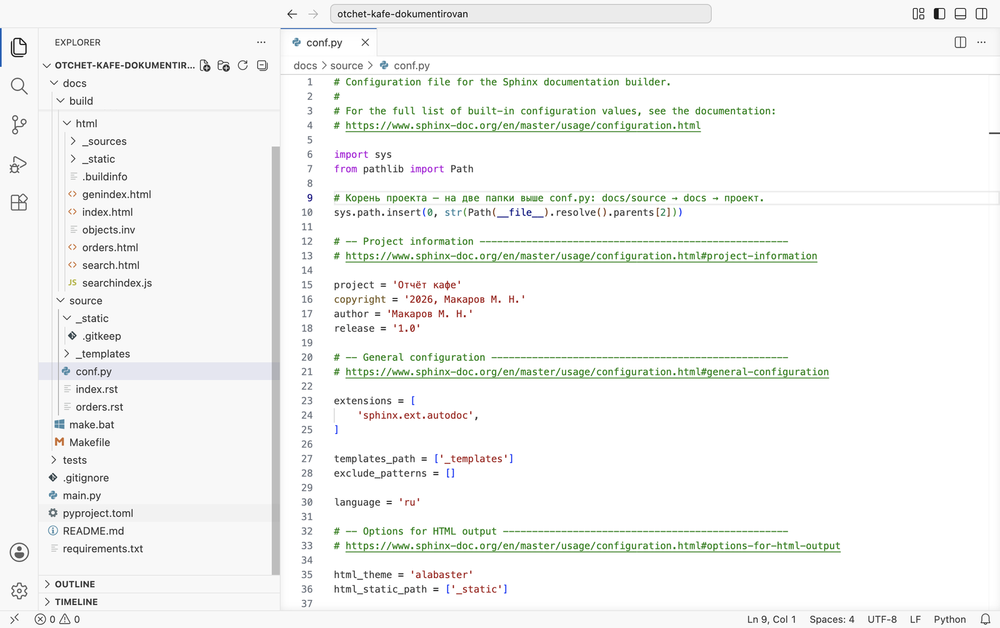
6–10. Строка 10 добавляет корень проекта в начало sys.path; комментарий над ней объясняет, откуда взялась двойка.Строка sys.path.insert(0, str(Path(__file__).resolve().parents[2])) по частям:
__file__— путь к самомуconf.py, его задаёт Sphinx;Path(…).resolve()— полный путь от корня диска;.parents[2]— на два уровня выше папки файла:parents[0]—docs/source,parents[1]—docs,parents[2]— корень проекта;str(…)— путь строкой: вsys.pathхранят строки;sys.path.insert(0, …)— вставка в начало списка, чтобы папка проекта проверялась первой.
Путь считается от файла conf.py, поэтому строка работает на любой системе и из любой папки, откуда запущена сборка.
Соберите
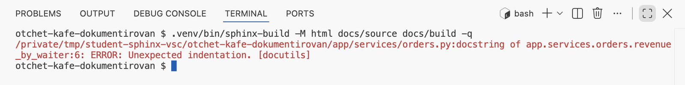
Unexpected indentation, неожиданный отступ, в докстринге revenue_by_waiter, в строке 6 от его начала.Откройте страницу «Заказы смены»
Обновите сайт в браузере и перейдите по пункту «Заказы смены» в навигации.

load_orders два исключения слились в один абзац, у revenue_by_waiter продолжение описания top вынесено отдельным абзацем: этому месту соответствует ошибка из вывода.autodoc вставляет докстринг в страницу как текст reStructuredText. Разделы Google — Args:, Returns: — для reStructuredText обычные строки. Чтобы они стали полями описания функции, нужен перевод.
§5Расширение napoleon
sphinx.ext.napoleon переводит разделы Google в поля Sphinx во время сборки. Файлы проекта при этом не меняются: перевод идёт в памяти.
Args:
top: Сколько официантов оставить…
Raises:
ValueError: Если список заказов пуст.
:param top: Сколько официантов оставить…
:raises ValueError: Если список заказов пуст.
Справа — поля Sphinx, так выглядит формат reStructuredText из главы 4.8. Три шага.
Подключите napoleon и выберите формат Google
Добавьте вторую строку в extensions и две настройки под списком. Сохраните.
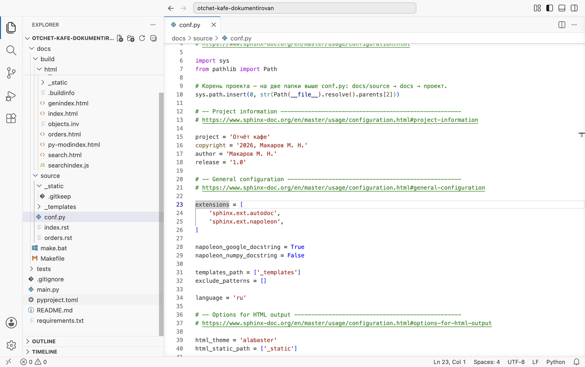
True, формат NumPy — False. По умолчанию napoleon разбирает оба; в курсе принят Google (глава 4.8), и раздел, записанный по ошибке в стиле NumPy, останется на странице как есть — так его легче заметить.Соберите

-q пустой вывод означает сборку без ошибок и предупреждений.Сравните страницу

top собрано в один пункт. Раздел Note у sort_orders_in_place стал блоком «Примечание».Типы на странице взяты из аннотаций и стоят в подписи функции, как в коде и в подсказке редактора. Повторять их в разделе Args: не нужно — правило главы 4.8 здесь видно на странице.
В conf.py — путь к проекту, расширения autodoc и napoleon. Страница «Заказы смены» показывает докстринг модуля и три функции с полями «Параметры», «Результат», «Исключение». Сборка с -q ничего не печатает.
§6Ошибка разметки в докстринге
Докстринг на сайте разбирается как reStructuredText, и часть знаков в нём — разметка: звёздочка начинает курсив, обратная кавычка — ссылку или код. Одиночный такой знак сборка отмечает предупреждением. Ruff его не отмечает: он проверяет наличие и оформление разделов, разметку текста он не разбирает. Шесть шагов: внести ошибку, проверить Ruff, собрать, посмотреть страницу, собрать в строгом режиме, исправить.
Допишите в описание пример со звёздочкой
В app/services/orders.py, в докстринге revenue_by_waiter, допишите к описанию top: , *3 — три лучших. Сохраните.
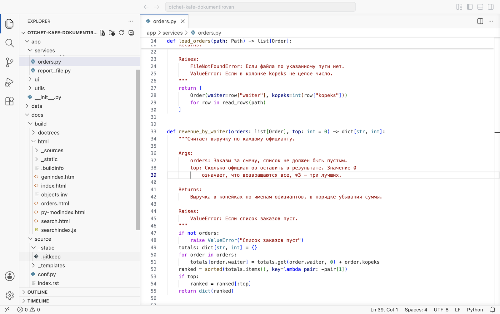
top: означает, что возвращаются все, *3 — три лучших. Для Python это обычный текст.Проверьте файл Ruff
.venv/bin/ruff check app/services/orders.py.venv\Scripts\ruff check app/services/orders.py
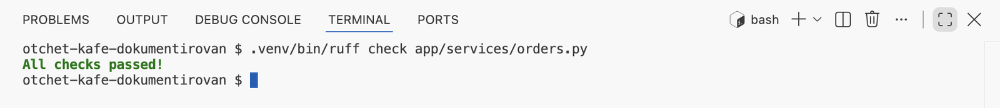
All checks passed! — для Ruff докстринг оформлен верно.Соберите с ключом -E
Изменился модуль, а не страница .rst, поэтому сборку запускают с -E, чтобы Sphinx наверняка перечитал докстринги: … -q -E.
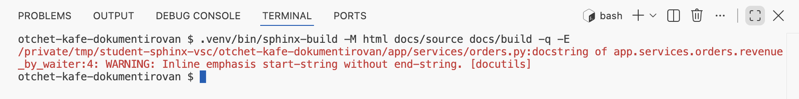
WARNING: Inline emphasis start-string without end-string — «начало курсива без конца». Место — docstring of app.services.orders.revenue_by_waiter:4: функция и строка 4 докстринга после перевода napoleon. С номером строки в файле она не совпадает, поэтому место ищут по имени функции.Посмотрите страницу

top звёздочка перед 3 подчёркнута как ссылка: так Sphinx помечает место ошибки разметки. Сайт собран, но текст выглядит не так, как написан.Соберите в строгом режиме
Обычная сборка с предупреждением завершается успешно. Ключ -W делает каждое предупреждение ошибкой, --keep-going при этом дособирает сайт и показывает все предупреждения сразу. Код завершения команды печатает echo $?$LASTEXITCODE; на кадре они записаны одной строкой.
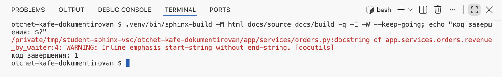
код завершения: 1. Ноль означает успех, любое другое число — ошибку. По этому коду проверка в GitHub (глава 4.15) отличает сломанную документацию от исправной.Исправьте описание и соберите ещё раз
Уберите звёздочку: …возвращаются все. Если знак нужен в тексте, его берут в двойные обратные кавычки — ``*3``, тогда он выводится как код. Соберите с теми же ключами.
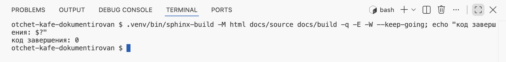
код завершения: 0.Знаки, которые в докстрингах чаще всего дают такие предупреждения: одиночная * перед буквой или цифрой (курсив), **kwargs (жирный: Inline strong start-string without end-string), одиночная обратная кавычка (Inline interpreted text … without end-string). Исправление одно — двойные обратные кавычки вокруг кода.
§7Ссылки на исходный код
Описание отвечает на вопрос «что делает функция». Посмотреть, как она это делает, позволяет расширение sphinx.ext.viewcode: оно копирует исходники описанных модулей на сайт и ставит у каждой функции ссылку на её код. Три шага.
Подключите viewcode
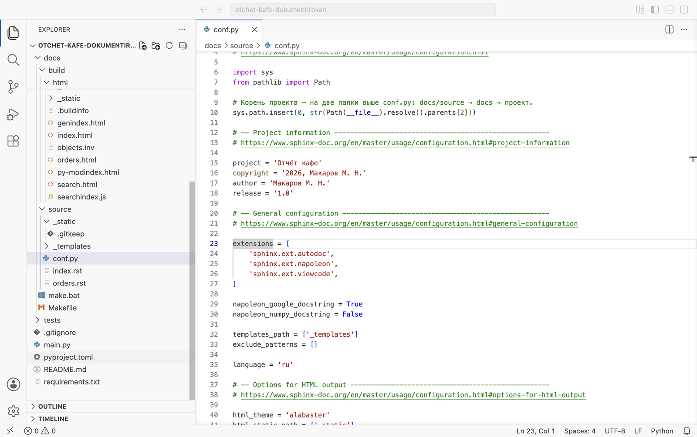
'sphinx.ext.viewcode',. Больше в conf.py в этой главе ничего не добавляется.Соберите

Перейдите по ссылке на код


Путь к проекту и три расширения — autodoc, napoleon, viewcode. Строгая сборка -W --keep-going завершается с кодом 0. В главе 4.14 страницы для всех модулей создаёт программа.
На сайте один модуль из десяти, и страница для него написана руками; о запуске проекта на сайте ничего нет. В главе 4.14 пишется своя страница о запуске, а страницы для всех модулей создаются одной командой.
§8Проверьте себя
Почему после мастера директива automodule неизвестна?
Её добавляет расширение sphinx.ext.autodoc, а список extensions после мастера пуст.
Почему autodoc не находит пакет app?
Python ищет модули в папках из sys.path, а у sphinx-build корня проекта в этом списке нет. Его добавляет строка sys.path.insert(0, …) в conf.py.
Чему равны parents[0], parents[1] и parents[2] для docs/source/conf.py?
docs/source, docs и корень проекта.
Что делает napoleon с файлом проекта?
Ничего: файл не меняется. Разделы Google переводятся в поля Sphinx в памяти, во время сборки.
Ruff отвечает All checks passed, а Sphinx печатает предупреждение. Как такое возможно?
Ruff проверяет наличие и оформление разделов. Sphinx разбирает текст докстринга как reStructuredText и находит ошибки разметки. Это разные проверки, нужны обе.
.. automodule:: app.services.orders
:members:
sys.path.insert(0, str(
Path(__file__).resolve().parents[2]))
sphinx.ext.autodoc
sphinx.ext.napoleon
sphinx.ext.viewcode
napoleon_google_docstring = True
napoleon_numpy_docstring = False
-q — только сообщения
-E — перечитать всё
-W --keep-going
код 1 — есть предупреждения
Итог главы
Описания функций выводит на страницу директива automodule с параметром :members:. Её добавляет расширение autodoc, которое импортирует модуль проекта; чтобы импорт прошёл, корень проекта добавляют в начало sys.path строкой с Path(__file__).resolve().parents[2]. Разделы Google переводит в поля «Параметры», «Результат», «Исключение» расширение napoleon. Типы приходят из аннотаций и стоят в подписи. Одиночные * и обратные кавычки в докстринге дают предупреждения разметки, которых Ruff не показывает; ключи -W --keep-going делают их ошибкой с кодом 1. Расширение viewcode добавляет ссылки на исходный код. В главе 4.14 — своя страница в разметке reStructuredText и страницы для всех модулей сразу.
- Директивы autodoc и
autodoc_typehints— sphinx.ext.autodoc. - Разделы Google и настройки napoleon — sphinx.ext.napoleon.
- Ссылки на исходники — sphinx.ext.viewcode.
- Ключи
-q,-E,-W,--keep-going— sphinx-build. - Поиск модулей по
sys.path— документация Python. - Кадры сняты на третьем архиве сценариями
shots/shoot_sphinx.pyиshots/sphinx_run.py, Sphinx 9.1.1.